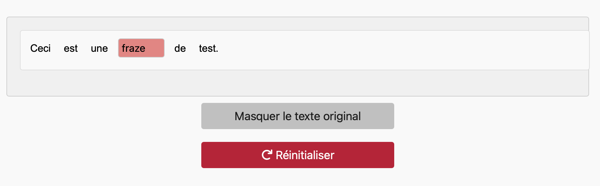

Aide
Bienvenue dans l'application de génération de textes à trous, un outil interactif conçu pour faciliter l'apprentissage des langues et la compréhension des textes. Vous pouvez coller votre texte dans la zone de saisie, sélectionner un mode et générer un exercice à trous pour améliorer vos compétences linguistiques.
Étape 1 : Entrez votre texte
Collez votre texte dans le champ prévu à cet effet. Assurez-vous que le texte est correct avant de continuer.

Étape 2 : Sélectionnez les mots à masquer
Choisissez les mots que vous souhaitez masquer dans le texte. Vous pouvez cliquer sur "Valider les mots" pour confirmer votre sélection.

Étape 3 : Affichez le texte original
Vous pouvez afficher le texte original à tout moment pour vérifier votre texte initial. Utilisez le bouton "Afficher le texte original".
Étape 4 : Réinitialiser
Si vous souhaitez réinitialiser le processus, cliquez sur "Réinitialiser" pour recommencer depuis le début.
Validation des mots
Une fois que vous avez sélectionné les mots à masquer, vous pouvez valider votre sélection en cliquant sur "Valider les mots".
Caractéristiques principales :
- Saisie et affichage du texte : Collez n'importe quel texte dans la zone de saisie. L'application traite le texte pour créer des exercices à trous.
- Modes de fonctionnement : Mode "Cacher les mots" où les mots sont masqués et peuvent être révélés en cliquant dessus, et mode "Taper les mots" où les utilisateurs saisissent les mots manquants.
- Contrôles utilisateur : Générer un texte à trous, sélectionner un mode, valider les mots, afficher le texte original, réinitialiser.
- Affichage interactif : Le texte à trous est affiché avec des mots masqués ou des champs de saisie, selon le mode sélectionné.
Utilisation :
- Coller le texte : Ouvrez l'application et collez votre texte dans la zone de saisie intitulée "Collez votre texte ici...".
- Générer un texte à trous : Cliquez sur le bouton "Générer un texte à trous" pour créer l'exercice.
- Sélectionner un mode : Utilisez le menu déroulant pour choisir entre "Cacher les mots" et "Taper les mots".
- Apprentissage interactif : En mode "Cacher les mots", cliquez sur les mots masqués pour les révéler. En mode "Taper les mots", saisissez les mots manquants dans les champs de texte.
Validation et comparaison : Cliquez sur "Valider les mots" pour vérifier vos réponses. Utilisez "Afficher le texte original" pour voir le texte d'origine à des fins de comparaison.
Réinitialiser : Cliquez sur "Réinitialiser" pour commencer un nouvel exercice avec un nouveau texte.
Avantages :
- Apprentissage amélioré : Aide les apprenants à améliorer leurs compétences linguistiques en interagissant activement avec le texte.
- Personnalisation : Permet de créer des exercices à partir de n'importe quel texte, offrant ainsi des expériences d'apprentissage personnalisées.
- Interactivité : Les fonctionnalités interactives rendent le processus d'apprentissage plus engageant et efficace.
- Polyvalence : Convient à diverses langues et niveaux d'apprentissage.